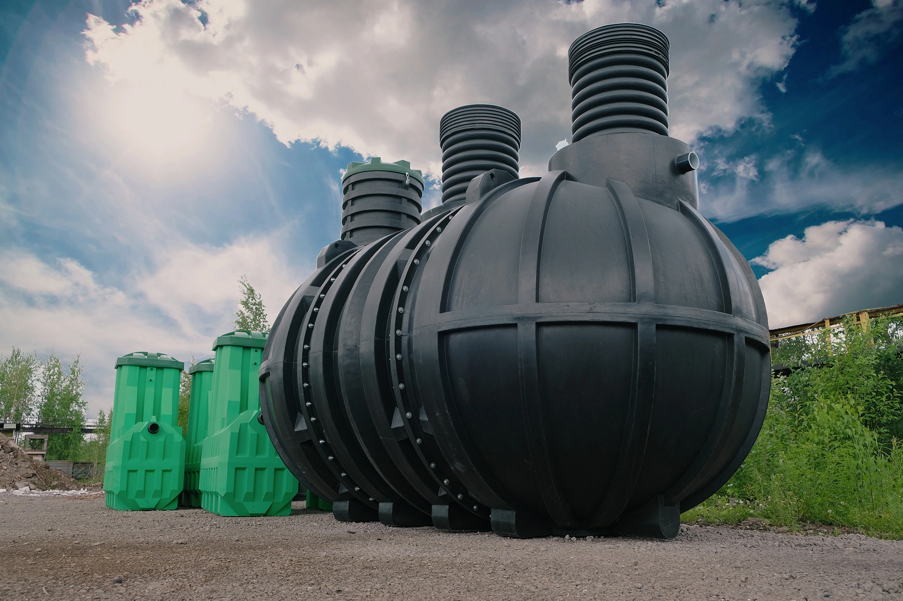
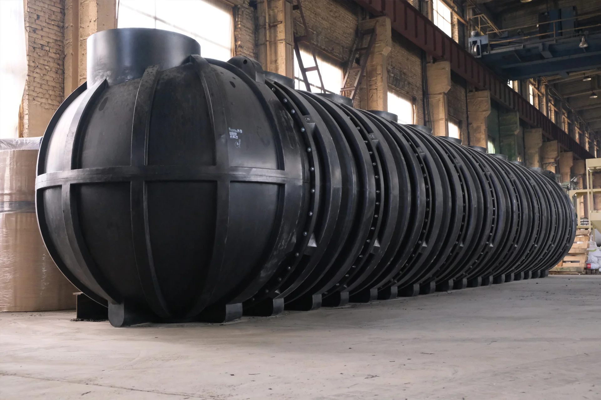
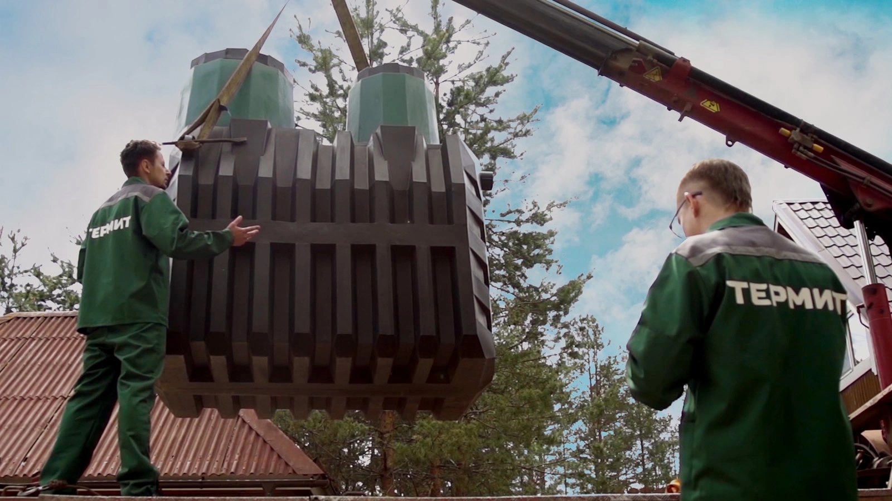

30 польз.
Термит Профи М
Термит Профи М15
Крупный септик серии Профи М до 15 пользователей
большой объёмэнергонезависимость
394 300 ₽



Крупный септик серии Профи М до 20 пользователей
Термит Профи М20 — крупный автономный септик для объектов с высокой нагрузкой: производитель указывает вместимость до 40 человек. Конструкция рассчитана на объекты с постоянной нагрузкой, поэтому перед заказом стоит сверить фактический суточный расход стоков. Если нагрузка выше — смотрите Термит Профи М25 (до 50 человек), если ниже — Термит Профи М15 (до 30 человек).
Оставьте номер — свяжемся ежедневно с 08:00 до 20:00.